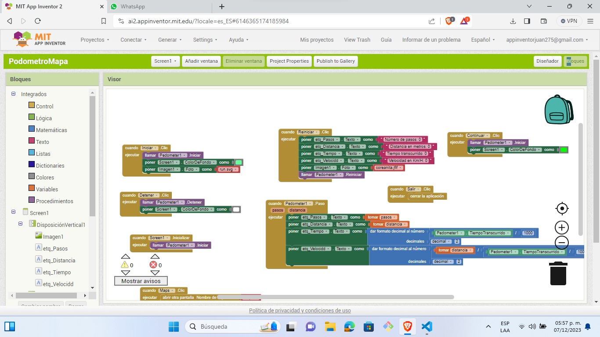

Documentación de mi Aplicación Podómetro
¿Qué es un Podómetro?
Un Podómetro es un dispositivo o aplicación que mide la distancia recorrida por una persona al caminar o correr. Esta aplicación realiza mediciones en metros y utiliza el módulo GPS para ello.
Funcionalidades de la Aplicación
Esta aplicación de Podómetro incluye las siguientes funciones:
- Medición de Distancia: Registra la distancia recorrida en metros.
- Integración de Mapa: Utiliza el módulo GPS para mostrar un mapa con la ubicación actual.
- Botones: La aplicación cuenta con botones de inicio, reinicio y cambio a la vista de mapa.
Uso de la Aplicación
Para usar la aplicación de Podómetro, inicia la medición presionando el botón de inicio. Puedes reiniciar la medición con el botón de reinicio y cambiar a la vista de mapa con el botón correspondiente.
Consejos para una Medición Precisa
Para obtener mediciones precisas con el Podómetro, considera lo siguiente:
- Buena Recepción GPS: Utiliza la aplicación en áreas con buena recepción satelital para una medición más precisa.
- Calibración: Calibra el dispositivo si es necesario para mejorar la precisión de la medición.
- Condiciones de Uso: Camina o corre en terrenos planos y estables para mediciones más precisas.
Descargar y Utilizar la Aplicación
Puedes descargar la aplicación de Podómetro haciendo clic en el siguiente botón:
Una vez descargada, sigue las instrucciones dentro de la app para comenzar a medir la distancia y acceder a la vista del mapa.

APk
Enlace de Descarga